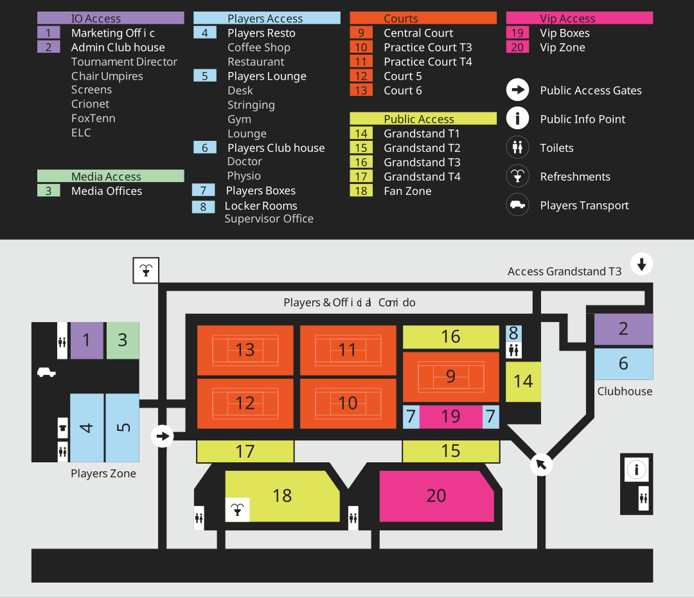

- Two dedicated courts are located on-site at the tournament venue.
- Additional courts are available for practice just a few minutes away from the main venue.
Address: Str. Moara de Vant 171, Iași 707023
Google Maps: View on Google Maps
Website: Iasi Open